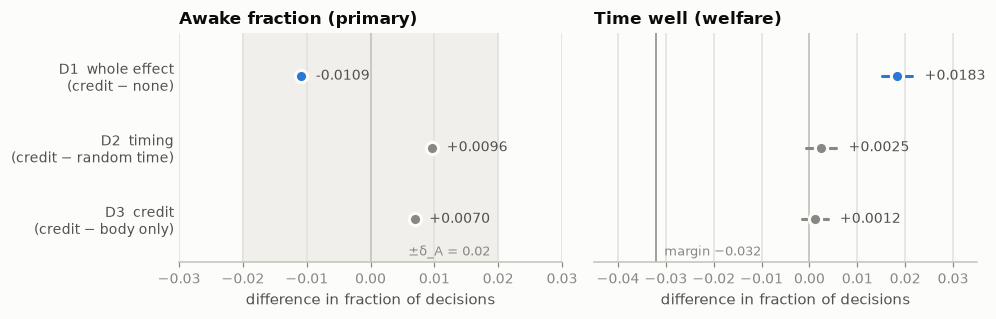
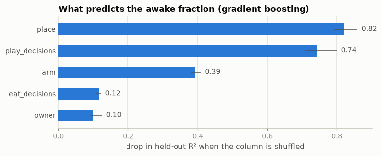

A pre-registered simulation study: question, design, result, and the bug that hit the analysis
In short. A virtual pet sleeps a lot. I asked whether petting it right after it eats or plays (and giving its learning agent reward credit for that moment) would keep it awake more. Before running anything I wrote down the design, the outcome, the analysis and the rule that turns numbers into an answer. Then I ran it once: 9,600 simulated lives. The answer, read by the pre-written rule, was no: with the reward the pet sleeps more, slightly. Its welfare measure improved, but that gain cannot be told apart from what petting does to the body: it is not evidence that the reward credit itself makes the pet better off. The analysis crashed after the lives were saved; this page also shows that bug, how it was fixed before any result was read, and what I would do differently.
Every official number on this page is recomputed in a code cell from the published data (data/lives.parquet) and asserted against the official values (data/reference.json) to within 1e-9. Anything that was not part of the official, pre-registered result is marked Exploratory, after the result. Code is folded; click “Code” to see it.
Setup: imports, data, shared helpers
import sysfrom pathlib import PathROOT = Path.cwd().parent if Path.cwd().name =="notebooks"else Path.cwd()sys.path.insert(0, str(ROOT))import numpy as npimport pandas as pdimport matplotlib.pyplot as pltfrom IPython.display import HTML, Markdown, displayimport casestudy as csfrom casestudy import stylestyle.apply()REF = cs.REFCHECKS = [] # every official number shown below is asserted and logged heredef check(got, ref, what): cs.assert_matches(got, ref, what) CHECKS.append(what)def say(text): display(Markdown(text))def show(df):# plain HTML table without the index: deterministic markup, unlike a Styler display(HTML(df.to_html(index=False, border=0, classes="table table-sm")))
1. The question
The pet is a small simulated animal driven by a learning agent: when it receives reward credit, the action it just took becomes more likely. Its day is a long sequence of decisions (eat, play, sleep and so on), and in the simulation it sleeps a lot.
The question, in plain words: if its simulated owner pets it right after it eats or plays, does the pet stay awake more? Petting does two things at once: it changes the pet’s body state, and it can give the learning agent reward credit for what it just did. A careful answer has to separate those two.
Before the run I also wrote down what I expected: “no: it sleeps more or stays the same”. That expectation came from a quick look at 20 units run with the seeds reserved for the project’s software tests (“test seeds”), which are not part of the research data.
2. Why pre-register
With a simulator you can run as many variants as you like and report the one that looks best. To make that impossible, the question, outcome, analysis, relevant effect size and reading rule were committed to the project’s history before the simulation code was merged and long before the run. The pre-registration entry is commit 455c6d61 of the project’s private repository, dated 2026-11-20 14:06:26 UTC−3; its relevant lines are quoted, translated and in the original Portuguese, in the appendix, and PROVENANCE lists every hash and file checksum. The commit times (2026-11-20, UTC−3) tell the story:
Timeline from the commit history
timeline = pd.DataFrame([ ("14:06", "Pre-registration entry committed", "before"), ("14:19", "Analysis plan approved", "before"), ("15:13", "Simulation code merged", "before"), ("15:51", "Run started", "run"), ("18:36", "All 9,600 lives measured and saved; analysis crashed", "run"), ("18:38", "Fix committed (no result number had been read)", "after"), ("18:41", "Re-analysis of the saved measurements", "after"), ("18:44", "Result written", "after"),], columns=["time (UTC−3)", "event", "phase"])t = pd.to_datetime(timeline["time (UTC−3)"], format="%H:%M")run_hours = (t[4] - t[3]).total_seconds() /3600fix_minutes = (t[5] - t[4]).total_seconds() /60show(timeline)say(f"The run took **{int(run_hours)} h {round(run_hours %1*60)} min** of wall time, inside the pre-registered stopping rule "f"(projected cost above 4 h → no run). The fix was committed **{fix_minutes:.0f} min** after the lives were saved.")
time (UTC−3)
event
phase
14:06
Pre-registration entry committed
before
14:19
Analysis plan approved
before
15:13
Simulation code merged
before
15:51
Run started
run
18:36
All 9,600 lives measured and saved; analysis crashed
run
18:38
Fix committed (no result number had been read)
after
18:41
Re-analysis of the saved measurements
after
18:44
Result written
after
The run took 2 h 45 min of wall time, inside the pre-registered stopping rule (projected cost above 4 h → no run). The fix was committed 2 min after the lives were saved.
The stopping rule was simple: run once; integrity checks fail loudly before any measurement; if the projected cost is above 4 hours, do not run.
3. The design
Four arms (what happens around eating and playing) × four simulated owner types × three places of the food × 200 paired units. A unit uses the same random seed in all four arms, so every comparison between arms is a paired one. Each life lasts 14 simulated days.
Arms and contrasts
arms = pd.DataFrame([ ("no_petting", "control: no extra petting", "no", "—"), ("petting_body_only", "extra petting changes the pet's body state", "no", "—"), ("petting_with_credit", "extra petting plus reward credit", "yes", "right after eating/playing"), ("petting_with_credit_random_time", "the same number of extra petting acts with credit", "yes", "at a random time"),], columns=["arm", "what happens", "reward credit", "timing"])contrasts = pd.DataFrame([ ("D1", "with_credit − no_petting", "the whole effect (primary)"), ("D2", "with_credit − random_time", "the timing"), ("D3", "with_credit − body_only", "the credit"),], columns=["contrast", "difference", "what it isolates"])assertlist(arms.arm) == cs.ARMSfor cid, (a, b) inzip(["D1", "D2", "D3"], [("petting_with_credit", "no_petting"), ("petting_with_credit", "petting_with_credit_random_time"), ("petting_with_credit", "petting_body_only")]):assert cs.CONTRASTS[cid] == {"a": a, "b": b}show(arms)show(contrasts)
arm
what happens
reward credit
timing
no_petting
control: no extra petting
no
—
petting_body_only
extra petting changes the pet's body state
no
—
petting_with_credit
extra petting plus reward credit
yes
right after eating/playing
petting_with_credit_random_time
the same number of extra petting acts with credit
yes
at a random time
contrast
difference
what it isolates
D1
with_credit − no_petting
the whole effect (primary)
D2
with_credit − random_time
the timing
D3
with_credit − body_only
the credit
Owner types: attentive, neglectful, random, inconsistent. Places of the food: at_feeder, near, far. The 4 × 3 owner/place combinations are the 12 cells.
Primary outcome.awake_frac_d1_14: the fraction of the pet’s decisions over the 14 days that were not “sleep”. Each life has 1,344 decisions (96 a day, one every 15 simulated minutes), so a fraction of decisions reads directly as a fraction of the pet’s day. The project’s primary welfare measure, time_well (fraction of decisions taken while the pet was neither deprived nor exhausted), is read alongside it.
Analysis. For each unit, take the arm difference in each of the 12 cells and average them: one number per unit. The estimate is the mean of the 200 unit numbers; the 95% confidence interval is Student t over the units.
Relevant size. δ_A = 0.02 of the day awake. The plan marks it as having no external source: it is a judgement call, written down before the run but after the 20-unit look at test seeds mentioned above. The same holds for the welfare margin (0.032) and for the premise floors: the pre-registered minimums the design had to reach for a reading to hold (for example, at least 50 extra petting events per life in 95% of the lives). A premise that misses its floor is recorded and limits what can be read; it does not stop the run.
Reading rules, applied in order (the first line that applies wins):
rule
condition
answer
L-AWAKE (D1, awake fraction)
CI upper < 0
no: with the reward the pet sleeps more
CI within ±δ_A
no: stays the same (if the lower bound is also above 0: “goes up, but below the relevant size”)
CI lower > δ_A
yes, stays awake more
otherwise
inconclusive
L-WELL (D1, time_well)
CI lower > 0
the pet is better off
CI lower > −0.032
not worse
CI upper < −0.032
worse
otherwise
inconclusive
L-WHY (only if L-AWAKE is not “stays the same”)
D2 and D3 lower bounds > 0
by the timely reward and by what the pet learns
only D3 lower bound > 0
by the credit, at any time
neither
by the body effect of petting, not by learning
the dose premise failed (too few credits had an effect)
only the third answer can come out
Code
assert cs.DECISIONS_PER_DAY *15== cs.MIN_PER_DAY # one decision every 15 simulated minutessay(f"For scale: δ_A = {cs.DELTA_A} of the decisions ({cs.DECISIONS_PER_DAY} decisions a day, one every 15 minutes), ""read as a share of a 24-hour day, is about "f"**{cs.minutes(cs.DELTA_A):.0f} minutes** of the pet's day.")
For scale: δ_A = 0.02 of the decisions (96 decisions a day, one every 15 minutes), read as a share of a 24-hour day, is about 29 minutes of the pet’s day.
4. The data
One row per simulated life, 13 columns; the full dictionary is on the data schema page. Only outcome measures are published; the agent’s internal state is not. The checks below are plain DuckDB SQL over the parquet file (the same checks run in scripts/check_data.py before anything else).
DuckDB: counts and pairing
per_arm = cs.sql("SELECT arm, count(*) AS lives, count(DISTINCT owner || place) AS cells, ""count(DISTINCT unit) AS units FROM lives GROUP BY arm ORDER BY arm")show(per_arm)pairing = cs.sql(""" SELECT count(*) AS unit_cells, min(arms) AS min_arms, max(arms) AS max_arms FROM (SELECT unit, owner, place, count(DISTINCT arm) AS arms FROM lives GROUP BY ALL)""")show(pairing)n_lives =int(per_arm.lives.sum())assert n_lives == REF["preregistered"]["lives"] ==9600assert (per_arm.cells ==12).all() and (per_arm.units == cs.N_UNITS).all()assert pairing.min_arms[0] == pairing.max_arms[0] ==4say(f"**{n_lives:,} lives** = {len(per_arm)} arms × {per_arm.cells[0]} cells × {per_arm.units[0]} units; "f"each of the {pairing.unit_cells[0]:,} unit-cells appears in all {pairing.max_arms[0]} arms.")
arm
lives
cells
units
no_petting
2400
12
200
petting_body_only
2400
12
200
petting_with_credit
2400
12
200
petting_with_credit_random_time
2400
12
200
unit_cells
min_arms
max_arms
2400
4
4
9,600 lives = 4 arms × 12 cells × 200 units; each of the 2,400 unit-cells appears in all 4 arms.
DuckDB: arm means, checked against the official values
means = cs.sql("SELECT arm, avg(awake_frac_d1_14) AS awake_frac_d1_14, avg(time_well) AS time_well ""FROM lives GROUP BY arm ORDER BY arm")for r in means.itertuples():for m in ("awake_frac_d1_14", "time_well"):assertabs(getattr(r, m) - REF["arm_means"][r.arm][m]) <= cs.TOL CHECKS.append(f"arm mean {r.arm}{m}")display(means.set_index("arm").round(4))
awake_frac_d1_14
time_well
arm
no_petting
0.5300
0.7767
petting_body_only
0.5121
0.7939
petting_with_credit
0.5191
0.7951
petting_with_credit_random_time
0.5095
0.7926
5. The result
The contrasts
The official paired contrasts, recomputed from the parquet and asserted against reference.json:
Recompute D1, D2, D3 and assert them
res = {}for m in ("awake_frac_d1_14", "time_well"):for cid in ("D1", "D2", "D3"): r = cs.contrast(cid, m) check(r, REF["contrasts"][m][cid], f"{cid}{m}") res[(m, cid)] = rtable = pd.DataFrame([dict(measure=m, contrast=c, estimate=r["mean"], ci_low=r["ci_low"], ci_high=r["ci_high"]) for (m, c), r in res.items()])show(table.round(4))
measure
contrast
estimate
ci_low
ci_high
awake_frac_d1_14
D1
-0.0109
-0.0113
-0.0105
awake_frac_d1_14
D2
0.0096
0.0093
0.0100
awake_frac_d1_14
D3
0.0070
0.0067
0.0073
time_well
D1
0.0183
0.0152
0.0215
time_well
D2
0.0025
-0.0007
0.0056
time_well
D3
0.0012
-0.0015
0.0038
Forest plot
labels = {"D1": "D1 whole effect\n(credit − none)", "D2": "D2 timing\n(credit − random time)","D3": "D3 credit\n(credit − body only)"}fig, axes = plt.subplots(1, 2, figsize=(9.2, 3.0), sharey=True)for ax, m, title inzip(axes, ("awake_frac_d1_14", "time_well"), ("Awake fraction (primary)", "Time well (welfare)")):for i, cid inenumerate(("D1", "D2", "D3")): r = res[(m, cid)] color = style.ACCENT if cid =="D1"else style.CONTEXT ax.plot([r["ci_low"], r["ci_high"]], [i, i], color=color, lw=2, zorder=3) ax.plot(r["mean"], i, "o", ms=8, color=color, mec=style.SURFACE, mew=2, zorder=4) ax.annotate(f"{r['mean']:+.4f}", (r["ci_high"], i), xytext=(8, 0), textcoords="offset points", va="center", color=style.INK_2, fontsize=9) ax.axvline(0, color=style.BASELINE, lw=1, zorder=1) ax.set_title(title) ax.set_ylim(2.6, -0.6) ax.grid(axis="y", visible=False)axes[0].axvspan(-cs.DELTA_A, cs.DELTA_A, color=style.WASH, zorder=0)axes[0].text(cs.DELTA_A, 2.55, f"±δ_A = {cs.DELTA_A} ", ha="right", va="bottom", color=style.MUTED, fontsize=8.5)axes[0].set_xlim(-0.03, 0.03)axes[1].axvline(-cs.MARGIN_WELL, color=style.MUTED, lw=1, zorder=1)axes[1].text(-cs.MARGIN_WELL, 2.55, f" margin −{cs.MARGIN_WELL}", ha="left", va="bottom", color=style.MUTED, fontsize=8.5)axes[1].set_xlim(-0.045, 0.035)axes[0].set_yticks(range(3), [labels[c] for c in ("D1", "D2", "D3")])for ax in axes: ax.set_xlabel("difference in fraction of decisions")fig.tight_layout()plt.show()

Figure 1: The three pre-registered contrasts with 95% CIs (on the awake fraction the intervals are narrower than the dots). Left: awake fraction, with the pre-registered ‘stays the same’ band ±δ_A. Right: time well, with the non-inferiority margin −0.032.
Applying the rules
The reading rules are code (in casestudy/__init__.py), applied to the recomputed intervals; the label they return is asserted against the label recorded in the official result.
Apply L-AWAKE, L-WELL and L-WHY
a, w = res[("awake_frac_d1_14", "D1")], res[("time_well", "D1")]d2, d3 = res[("awake_frac_d1_14", "D2")], res[("awake_frac_d1_14", "D3")]w2, w3 = res[("time_well", "D2")], res[("time_well", "D3")]l_awake = cs.read_awake(a["ci_low"], a["ci_high"])l_well = cs.read_well(w["ci_low"], w["ci_high"])l_why = cs.read_why(l_awake, d2["ci_low"], d3["ci_low"], REF["dose_premise_held"])for rule, label in (("L-AWAKE", l_awake), ("L-WELL", l_well), ("L-WHY", l_why)):assert label == REF["readings"][rule]["label"], (rule, label) CHECKS.append(f"reading {rule}")within =-cs.DELTA_A <= a["ci_low"] and a["ci_high"] <= cs.DELTA_Aassert withinassertall(r["ci_low"] <0< r["ci_high"] for r in (w2, w3)) # the time-well caveat below relies on thissay(f"""- **L-AWAKE: "{l_awake}".** D1 on the awake fraction is {cs.fmt(a)}: the whole interval is below zero. That is about **{abs(cs.minutes(a['mean'])):.0f} minutes less awake per simulated day**. The interval also fits inside ±δ_A, so the "stays the same" line would apply too; the rule is read in order and the first line ("upper < 0") applies.- **L-WELL: "{l_well}".** D1 on time well is {cs.fmt(w)}: the lower bound is above zero. **This gain cannot be separated from the body effect of petting:** on time well, D2 is {cs.fmt(w2)} and D3 is {cs.fmt(w3)}, both intervals include zero. The three arms with petting sit close to each other, above no_petting, so the welfare gain is not shown to come from the reward credit or its timing.- **L-WHY.** D2's lower bound ({d2['ci_low']:+.4f}) and D3's ({d3['ci_low']:+.4f}) are both above zero, so the rule returns **"{l_why}"**. Read it with the caveat just below: D1 has the opposite sign.""")
L-AWAKE: “no: with the reward the pet sleeps more”. D1 on the awake fraction is -0.0109 [-0.0113; -0.0105]: the whole interval is below zero. That is about 16 minutes less awake per simulated day. The interval also fits inside ±δ_A, so the “stays the same” line would apply too; the rule is read in order and the first line (“upper < 0”) applies.
L-WELL: “the pet is better off”. D1 on time well is +0.0183 [+0.0152; +0.0215]: the lower bound is above zero. This gain cannot be separated from the body effect of petting: on time well, D2 is +0.0025 [-0.0007; +0.0056] and D3 is +0.0012 [-0.0015; +0.0038], both intervals include zero. The three arms with petting sit close to each other, above no_petting, so the welfare gain is not shown to come from the reward credit or its timing.
L-WHY. D2’s lower bound (+0.0093) and D3’s (+0.0067) are both above zero, so the rule returns “by the timely reward and by what the pet learns”. Read it with the caveat just below: D1 has the opposite sign.
Code
signs = {c: np.sign(res[("awake_frac_d1_14", c)]["mean"]) for c in ("D1", "D2", "D3")}assert signs == {"D1": -1, "D2": 1, "D3": 1}say(f"""**The L-WHY label needs a caveat.** It was written assuming D1 would have the same sign as D2 and D3.It came out opposite: D1 is negative ({a['mean']:+.4f}) while D2 ({d2['mean']:+.4f}) and D3 ({d3['mean']:+.4f})are positive. The official result keeps the label as written and states what the numbers actually show:**petting's effect on the body makes the pet sleep more; the credit (D3) and the right timing (D2) push itback toward awake, without covering the loss.**""")ep, late = cs.contrast("D1", "episode_rate"), cs.contrast("D1", "awake_frac_d8_14")check(ep, REF["contrasts"]["episode_rate"]["D1"], "guard D1 episode_rate")check(late, REF["contrasts"]["awake_frac_d8_14"]["D1"], "window D1 awake_frac_d8_14")say(f"""Two more official numbers, one line each. **Guard:** the share of hunger episodes closed by eatingrises, D1 = {cs.fmt(ep)}; the plan gives this guard no automatic verdict. **Days 8–14 only:** D1 on theawake fraction shrinks to {cs.fmt(late)}.""")
The L-WHY label needs a caveat. It was written assuming D1 would have the same sign as D2 and D3. It came out opposite: D1 is negative (-0.0109) while D2 (+0.0096) and D3 (+0.0070) are positive. The official result keeps the label as written and states what the numbers actually show: petting’s effect on the body makes the pet sleep more; the credit (D3) and the right timing (D2) push it back toward awake, without covering the loss.
Two more official numbers, one line each. Guard: the share of hunger episodes closed by eating rises, D1 = +0.0209 [+0.0147; +0.0270]; the plan gives this guard no automatic verdict. Days 8–14 only: D1 on the awake fraction shrinks to -0.0062 [-0.0069; -0.0056].
Absolute and standardized size (Exploratory, after the result)
The standardized effect dz (mean of the unit differences divided by their standard deviation) was not part of the official reading.
Code
dz = pd.DataFrame([dict(measure=m, contrast=c, estimate=r["mean"], sd_of_unit_diffs=r["sd"], dz=r["dz"], minutes_per_day=f"{cs.minutes(r['mean']):+.1f}"if m =="awake_frac_d1_14"else"—")for (m, c), r in res.items()])show(dz.round({"estimate": 4, "sd_of_unit_diffs": 4, "dz": 2}))assertabs(a["mean"]) < cs.DELTA_A andabs(a["dz"]) >0.8say(f"""D1 on the awake fraction has dz = {a['dz']:.2f}, which looks enormous next to the usual"0.8 is large" conventions. Yet it is about {abs(cs.minutes(a['mean'])):.0f} minutes a day, under thepre-registered δ_A. The two are consistent: each unit number is an average over 12 cells, and the arms sharethe same seed, so most noise cancels and the standard deviation of the unit differences is tiny({a['sd']:.4f}). A standardized effect measures how *reliably* the difference shows up, not how *much*it matters; that is why both are reported here, with the absolute one first.""")
measure
contrast
estimate
sd_of_unit_diffs
dz
minutes_per_day
awake_frac_d1_14
D1
-0.0109
0.0030
-3.70
-15.7
awake_frac_d1_14
D2
0.0096
0.0027
3.55
+13.9
awake_frac_d1_14
D3
0.0070
0.0022
3.18
+10.0
time_well
D1
0.0183
0.0226
0.81
—
time_well
D2
0.0025
0.0225
0.11
—
time_well
D3
0.0012
0.0188
0.06
—
D1 on the awake fraction has dz = -3.70, which looks enormous next to the usual “0.8 is large” conventions. Yet it is about 16 minutes a day, under the pre-registered δ_A. The two are consistent: each unit number is an average over 12 cells, and the arms share the same seed, so most noise cancels and the standard deviation of the unit differences is tiny (0.0030). A standardized effect measures how reliably the difference shows up, not how much it matters; that is why both are reported here, with the absolute one first.
6. Where it happens (descriptive)
The official result also reports the contrasts by owner type (averaging the 3 places within each unit) and by place (averaging the 4 owners). These breakdowns are descriptive: no reading rule applies to them. They are recomputed here and asserted against the official breakdowns.
Recompute the by-owner and by-place contrasts and assert them
rows = []for by, groups, key in (("owner", cs.OWNERS, "by_owner"), ("place", cs.PLACES, "by_place")):for g in groups:for m in ("awake_frac_d1_14", "time_well"):for cid in ("D1", "D2", "D3"): r = cs.contrast(cid, m, f"{by} = '{g}'") check(r, REF[key][g][m][cid], f"{key}{g}{cid}{m}") rows.append(dict(by=by, group=g, measure=m, contrast=cid, **r))br = pd.DataFrame(rows)wide = br.assign(value=[cs.fmt(r, 4) for r in rows]).pivot_table( index=["by", "group"], columns=["measure", "contrast"], values="value", aggfunc="first", sort=False)display(wide)
Figure 2: D1 (credit − none) by place and by owner type, with 95% CIs. Descriptive: no reading rule applies to subgroups.
Code
pl_ = br[(br.by =="place") & (br.measure =="time_well") & (br.contrast =="D1")].set_index("group")drops = pl_.loc[["at_feeder", "near"]]assert pl_.loc["far", "ci_low"] >0and (drops.ci_high <0).all() and (drops.ci_low >-cs.MARGIN_WELL).all()say("On time well, the whole D1 gain sits in the `far` place "f"({cs.fmt(pl_.loc['far'])}). In `at_feeder` ({cs.fmt(pl_.loc['at_feeder'])}) and "f"`near` ({cs.fmt(pl_.loc['near'])}) time well drops: both intervals exclude zero, and both drops are "f"within the pre-registered margin of {cs.MARGIN_WELL}. ""This is descriptive: the plan did not set a rule for places.")
On time well, the whole D1 gain sits in the far place (+0.0598 [+0.0506; +0.0690]). In at_feeder (-0.0032 [-0.0057; -0.0006]) and near (-0.0016 [-0.0025; -0.0007]) time well drops: both intervals exclude zero, and both drops are within the pre-registered margin of 0.032. This is descriptive: the plan did not set a rule for places.
7. The bug and the fix
What happened. All lives had been simulated, measured and saved when the analysis stopped with
KeyError: 'saude_media'
One pre-registered guard metric (the pet’s health over days 8–14) had never been recorded per life. The smoke test before the run exercised the simulation but not the analysis step, so the missing field only showed up at the end.
The fix (committed 2 minutes after the lives were saved, before any result number was read):
The guard was removed from the list of measured outcomes and is reported as NOT MEASURED, rather than silently dropped.
A re-analysis mode (--reanalisar) reads the saved measurements and refuses to run if the number of lives or logs differs from the plan.
No life was re-run and no reading rule changed. Measuring the guard after the fact would have meant replaying the 9,600 logs (about 1 hour, estimated); it was not done.
Code
assert REF["guards_not_measured"] ==1say(f"Guards reported as not measured in the official result: **{REF['guards_not_measured']}**. "f"Lives analysed after the fix: **{n_lives:,}**, the planned number, which is what the ""`--reanalisar` mode checks before reading anything.")
Guards reported as not measured in the official result: 1. Lives analysed after the fix: 9,600, the planned number, which is what the --reanalisar mode checks before reading anything.
Why this matters. The result itself was not touched: same lives, same contrasts, same rules. But one safety question that was planned (does this make the pet less healthy?) has no answer. The honest report is that the guard is missing, not that it passed.
8. Exploratory, after the result
Nothing in this section was in the plan. It does not change or replace the official readings above.
(a) The body effect alone: body_only − no_petting
L-WHY’s caveat says the body effect of petting pushes toward sleep. The plan had no contrast for that; here is its paired interval, computed the same way as D1–D3.
Paired CI for petting_body_only − no_petting
body = cs.summarize(cs.paired_differences("petting_body_only", "no_petting", "awake_frac_d1_14"))arm_diff = REF["arm_means"]["petting_body_only"]["awake_frac_d1_14"] - REF["arm_means"]["no_petting"]["awake_frac_d1_14"]assertabs(body["mean"] - arm_diff) <= cs.TOL # balanced pairing: mean of differences = difference of meanssay(f"**Exploratory, after the result.** petting_body_only − no_petting on the awake fraction: "f"**{cs.fmt(body)}** (about {abs(cs.minutes(body['mean'])):.0f} minutes less awake per day). "f"Petting that only acts on the body makes the pet sleep more, by more than the whole D1 "f"({a['mean']:+.4f}); the credit wins part of it back (D3 {d3['mean']:+.4f}). ""Caveat: arms diverge after the first petting, so this split between body and credit is not perfect.")
Exploratory, after the result. petting_body_only − no_petting on the awake fraction: -0.0179 [-0.0183; -0.0175] (about 26 minutes less awake per day). Petting that only acts on the body makes the pet sleep more, by more than the whole D1 (-0.0109); the credit wins part of it back (D3 +0.0070). Caveat: arms diverge after the first petting, so this split between body and credit is not perfect.
(b) A predictive model of the awake fraction
Exploratory, after the result. How much of the variation in the awake fraction across lives can be predicted from the design (arm, owner, place) and from what else happened in the life (eat and play decisions)? sleep_decisions is left out: it is the outcome itself. The petting count extra_pets is left out too: it is 0 only in no_petting and its level differs by arm, so it would carry the arm’s information and shuffling arm alone would understate how much the arm matters.
Cross-validation: GroupKFold with 5 folds, grouped by unit, so all 48 lives of a unit (4 arms × 12 cells) are held out together and paired seeds never leak between train and test.
Two models: a ridge regression (one-hot design + standardized counts, α chosen by internal CV) and a HistGradientBoostingRegressor (random_state=0).
Permutation importance on each held-out fold (R² drop, 5 repeats, random_state=0), with categorical variables permuted as whole columns.
This is a description of this simulation, not a causal analysis: eat and play counts are themselves consequences of the arm, and they are measured over the same days as the outcome.
GroupKFold CV, ridge and gradient boosting, permutation importance
from sklearn.compose import ColumnTransformerfrom sklearn.ensemble import HistGradientBoostingRegressorfrom sklearn.inspection import permutation_importancefrom sklearn.linear_model import RidgeCVfrom sklearn.metrics import r2_scorefrom sklearn.model_selection import GroupKFoldfrom sklearn.pipeline import make_pipelinefrom sklearn.preprocessing import OneHotEncoder, StandardScalerdf = cs.lives()CAT = ["arm", "owner", "place"]NUM = ["eat_decisions", "play_decisions"]X, y, groups = df[CAT + NUM], df["awake_frac_d1_14"].to_numpy(), df["unit"].to_numpy()assertnot {"sleep_decisions", "extra_pets"} &set(X.columns)models = {"ridge": lambda: make_pipeline( ColumnTransformer([("cat", OneHotEncoder(), CAT), ("num", StandardScaler(), NUM)]), RidgeCV(alphas=np.logspace(-3, 3, 13))),"gradient boosting": lambda: make_pipeline( ColumnTransformer([("cat", OneHotEncoder(sparse_output=False), CAT), ("num", "passthrough", NUM)]), HistGradientBoostingRegressor(random_state=0)),}scores, imps = {}, {}for name, make in models.items(): scores[name], imps[name] = [], []for train, test in GroupKFold(n_splits=5).split(X, y, groups): model = make().fit(X.iloc[train], y[train]) scores[name].append(r2_score(y[test], model.predict(X.iloc[test]))) pi = permutation_importance(model, X.iloc[test], y[test], n_repeats=5, random_state=0, scoring="r2") imps[name].append(pi.importances_mean)cv = pd.DataFrame({n: dict(mean_R2=np.mean(s), sd_R2=np.std(s, ddof=1), min_R2=np.min(s), max_R2=np.max(s))for n, s in scores.items()}).Tdisplay(cv.round(3))imp = {n: pd.DataFrame(v, columns=CAT + NUM) for n, v in imps.items()}best = cv.mean_R2.idxmax()order = imp[best].mean().sort_values(ascending=False)assertlist(order.index[:3]) == ["place", "play_decisions", "arm"] # the reading below relies on thissay(f"**Exploratory, after the result.** Held-out R² (mean ± sd over 5 folds): ridge "f"{cv.loc['ridge','mean_R2']:.3f} ± {cv.loc['ridge','sd_R2']:.3f}, gradient boosting "f"{cv.loc['gradient boosting','mean_R2']:.3f} ± {cv.loc['gradient boosting','sd_R2']:.3f}. "f"For {best}, the largest permutation importances are `{order.index[0]}` ({order.iloc[0]:.2f}), "f"`{order.index[1]}` ({order.iloc[1]:.2f}) and `{order.index[2]}` ({order.iloc[2]:.2f}) in R² drop.")
mean_R2
sd_R2
min_R2
max_R2
ridge
0.668
0.012
0.655
0.686
gradient boosting
0.874
0.006
0.867
0.882
Exploratory, after the result. Held-out R² (mean ± sd over 5 folds): ridge 0.668 ± 0.012, gradient boosting 0.874 ± 0.006. For gradient boosting, the largest permutation importances are place (0.82), play_decisions (0.74) and arm (0.39) in R² drop.
Importance chart
m = imp[best][order.index]fig, ax = plt.subplots(figsize=(7.2, 3.0))yy = np.arange(len(order))ax.barh(yy, m.mean(), height=0.55, color=style.ACCENT, zorder=3)ax.hlines(yy, m.min(), m.max(), color=style.INK_2, lw=1, zorder=4)for k, v inenumerate(m.mean()): ax.annotate(f"{v:.2f}", (m.max().iloc[k], k), xytext=(6, 0), textcoords="offset points", va="center", color=style.INK_2, fontsize=9)ax.set_yticks(yy, order.index)ax.set_ylim(len(order) -0.4, -0.6)ax.grid(axis="y", visible=False)ax.set_xlabel("drop in held-out R² when the column is shuffled")ax.set_title(f"What predicts the awake fraction ({best})")fig.tight_layout()plt.show()

Figure 3: Exploratory, after the result. Permutation importance (drop in held-out R²) for the better model; bars are the mean over 5 folds, the thin line spans the fold minimum to maximum.
How to read it. Where the food is and how often the pet chose to play explain the most variation between lives; the arm comes third, well ahead of eat decisions and owner type. The arm’s importance is not small, but it is not a measure of the effect’s size either: an R² drop says how reliably a column separates lives, and the paired design already showed that the arm difference is very consistent (large dz) while being only about 16 minutes a day. Play decisions are themselves partly a consequence of the arm, so the two share some of the same information. A high R² here says the simulation is fairly predictable from these columns. It does not say that changing any of them would cause the change, and it does not replace the pre-registered reading.
9. What this does not show, and what I would do differently
What this does not show.
Nothing about real players: the simulated owner rewards every time, and immediately.
Only one reward dose, and no other kinds of reward.
Only 14 days and these 12 cells.
Nothing about health: the guard was not measured.
Not that the reward credit improves welfare: the time-well gain is shared by all three petting arms.
The separation between credit and body effect is not perfect: the arms diverge after the first petting, and with owners that pet on their own, the credit also reaches the owner’s own petting.
δ_A, the welfare margin and the premise floors have no external source, and were written after the 20-unit look at test seeds.
After the result, the recommendation recorded was not to pursue this reward (at this dose) as the way to a more awake pet; another dose or reward would be a new question with its own plan.
What I would do differently.
Test the analysis in the smoke run, not only the simulation: run the full pipeline end to end on a handful of lives, so a missing field fails in minutes, not at the end of the whole run.
Write the “why” rule for both signs. L-WHY assumed D1 would move in the same direction as D2 and D3. A rule that names its sign assumptions would have produced a label that needs no caveat.
Justify δ_A and the margins with a source (a measured day-to-day variation, a design target or prior data) instead of a judgement call.
Plan the body-only vs control contrast. It turned out to be the key to interpreting the result, and here it can only be shown as exploratory.
Report absolute and standardized effects together from the start, so a large dz is never mistaken for a large effect.
10. Reproduce it
Everything on this site is rebuilt from the published data with one command (Python ≥ 3.12 and uv; all dependencies, including Quarto, are pinned in uv.lock):
uv sync
uv run python scripts/reproduce.py
It runs the DuckDB integrity checks, executes both notebooks in place (each stops on a failed assertion) and renders this site into docs/. The reproduction appendix recomputes all 18 official contrast × measure values.
Code
assertlen([c for c in CHECKS if c.startswith(("D1", "D2", "D3"))]) ==6assertlen([c for c in CHECKS if c.startswith(("by_owner", "by_place"))]) == (4+3) *2*3say(f"**Gate:** {len(CHECKS)} official values and labels on this page were recomputed and matched "f"`reference.json` (tolerance {cs.TOL:g}).")
Gate: 61 official values and labels on this page were recomputed and matched reference.json (tolerance 1e-09).
Appendix: the pre-registration entry
The study’s entry in the project’s pre-registration file, as committed in 455c6d61 (2026-11-20 14:06:26 UTC−3), before the plan was approved, the code merged and the run started. Only the lines about the question, the primary outcome, the reading rule with its margins and the stopping rule are quoted; the other lines of the entry are not reproduced, and “[…]” marks text left out inside a quoted line. Section numbers refer to the analysis plan, which is not published; its L-WHY and L-WELL rules are the ones in section 3 above.
Translated excerpt
field
value
hypothesis
the questions Q-AWAKE, Q-WHY and Q-WELL. “The expected outcome is ‘no: sleeps more or stays the same’”, from the test seeds (sections 1 and 2.2)
primary contrast
D1 = R-CB − R0 on T_AWAKE (the fraction of decisions without sleeping, days 1 to 14), on the mean of the 12 cells per unit, 95% CI by t, n 200; δ_A = 0.02, NO SOURCE. Alongside: D2 = R-CB − R-SORT, D3 = R-CB − R-CORPO and D1 on “Time well”, with the margin 0.032 (sections 6 and 7)
reading rule
L-AWAKE, in order: D1’s upper limit < 0, “no: with the reward the pet sleeps more”; the CI within ±δ_A, “no: stays the same”; the lower limit > δ_A, “yes, stays awake more”; otherwise “inconclusive”. L-WHY and L-WELL, in section 7. No measure is a gate
stopping rule
runs once; the integrity checks […] fail loudly before any measurement; the premises […] are recorded and do not stop it; with the smoke test’s projection above 4 h the run does not go ahead […] (sections 5 and 9)
Original (Portuguese)
campo
valor
hipótese
as perguntas Q-ACORDADO, Q-PORQUÊ e Q-BEM. “O desfecho esperado é ‘não: dorme mais ou fica igual’”, pelas sementes dos testes (seções 1 e 2.2)
contraste primário
D1 = R-CB − R0 no T_ACORDADO (a fração das decisões sem dormir, dias 1 a 14), na média das 12 células por unidade, IC95 pelo t, n 200; δ_A = 0,02, SEM FONTE. Ao lado: D2 = R-CB − R-SORT, D3 = R-CB − R-CORPO e o D1 no “Tempo bem”, com a margem 0,032 (seções 6 e 7)
regra de leitura
L-ACORDADO, em ordem: o limite de cima do D1 < 0, “não: com a recompensa o pet dorme mais”; o IC dentro de ±δ_A, “não: fica igual”; o limite de baixo > δ_A, “sim, fica mais tempo acordado”; senão “inconclusivo”. A L-PORQUÊ e a L-BEM, na seção 7. Nenhuma medida é gate
regra de parada
roda uma vez; as conferências […] falham alto antes de qualquer medida; as premissas […] ficam registradas e não param; com a projeção da fumaça acima de 4 h a run não roda […] (seções 5 e 9)